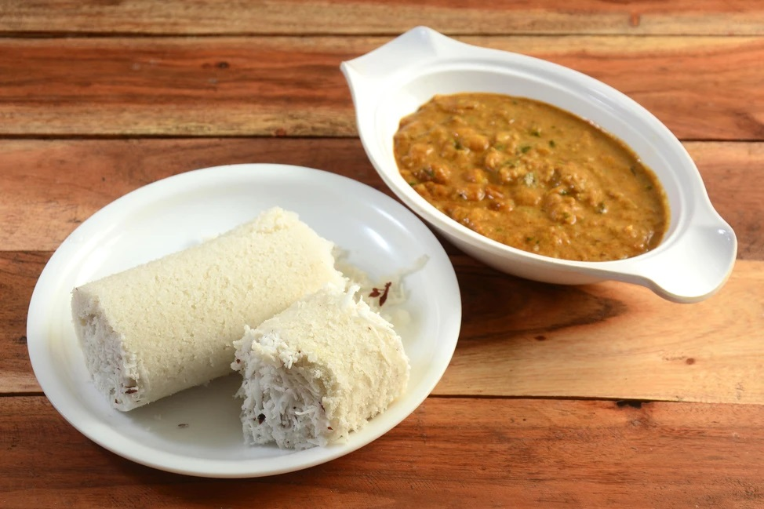
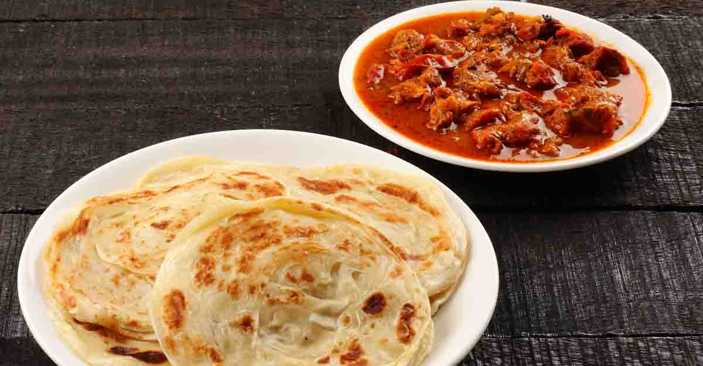
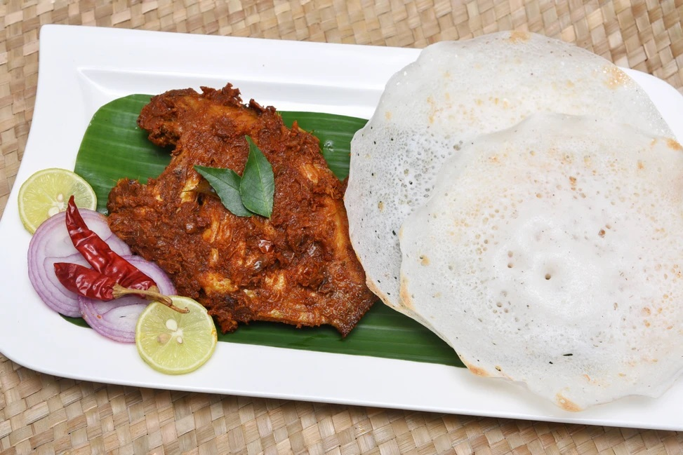
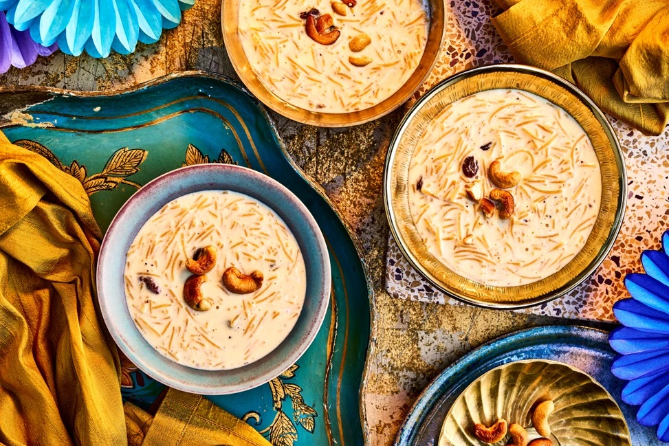
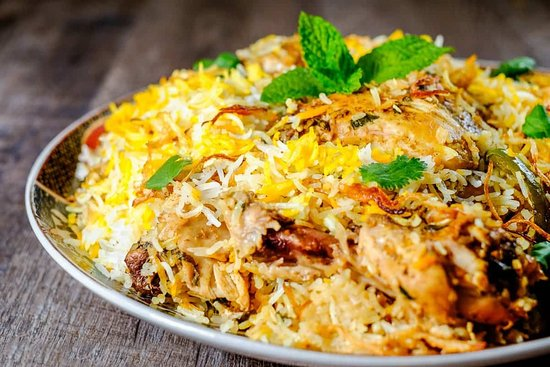
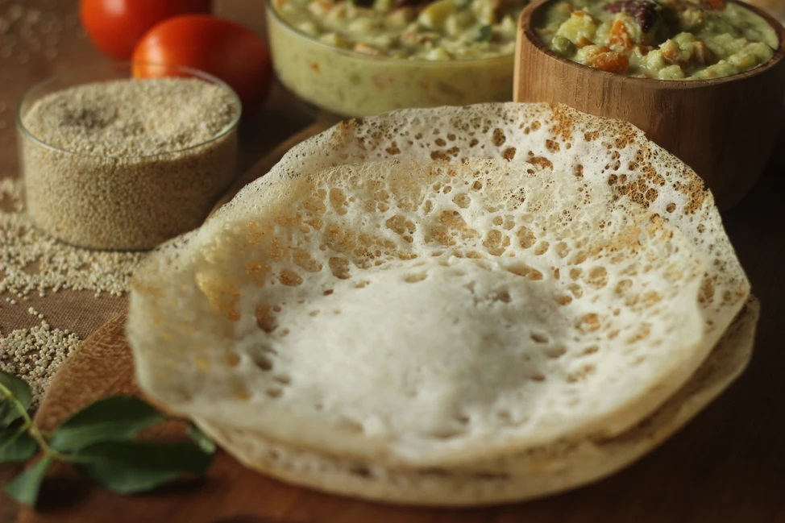

MY FAVORITE FOOD
In order to perform well in life, our body needs energy. We get this
energy from the food we eat. Without food, there will be no life. In
today's world, there are so many dishes available worldwide. Food comes
in a wide variety all around the world. Dosa, Paneer, Naan, Chapati,
Biryani, and more Indian delicacies are available. We are also offered
western cuisines such as noodles, pasta, burgers, fries, pizzas and more
dominating the food industry. In my favourite food essay, I will tell
you about the food I like eating the most.
1.Puttu and kadala curry

This is a breakfast staple eaten all over the state. Puttu
is a cylindrical steamed rice cake cooked in a mould with grated
coconut. It's usually served with kadala curry, a dish of black
chickpeas made with shallots, spices and coconut milk, that can also
be served with ripe bananas and grated coconut.
2.Malabar Parotta with Kerala beef curry

Layered flat bread that originated in the Malabar region called Parotta
is made by kneading maida (plain flour), egg (in some recipes), oil or
ghee and water. The dough is beaten and later shaped into a spiral
with thin layers. The ball is rolled flat and roasted into a Parotta
with ghee. This is then eaten with beef curry - pieces of beef
simmered in a curry made with tomatoes, onions, garlic and spices like
bay leaves, cinnamon, cardamom, cloves, black peppercorns and star
anise.
3.Karimeen pollichathu (fish)

This is one of Kerala's traditional delicacies.
Karimeen
or pearl spot fish is a speckled fish commonly found in the backwaters
of this state. This is traditionally a Syrian Christian delicacy but
has become part of Kerala's rich cuisine. Pearl spot fish is marinated
in a mixture of lemon juice, red chillies, and other ingredients,
wrapped and baked in plantain leaves, giving it a unique flavour.
4.Palada payasam (dessert)

A sweet rice kheer prepared with palada is a delicacy made in almost
all Kerala households during the festival of Onam and many other
special occasions. There are many variations of it, however, the
traditional recipe uses only basic ingredients like rice ada, milk,
sugar and ghee. Rice ada is easily available in Indian Kerala grocery
stores.
5.Thalassery biryani

Thalassery biryani originated from the malabar region of
Kerala and is quite popular for its unique aroma and taste that comes
from the unusual variety of rice called Jeerakasala. Unlike the other
kind of popular biryanis where basmati rice is used Thalassery biryan
is made using a premium quality short grain rice which is also known
as kaima rice or biriyani rice in Kerala.. The biriyani masala and
cooked rice are arranged in layers inside the dish. Meat is cooked
with the masala on a low heat and layered with rice before the lid of
the container is sealed with dough. Hot coal or charcoal is then
placed above the lid.
6.Appam with stew

Appam is a Kerala staple made from fermented rice flour and
coconut milk. It's similar to a thin pancake with crispy edges. These
crepe-like bowls are made from fermented rice flour, coconut milk,
coconut water and a little sugar. Ishtu or stew is a derivative of the
European stew and consists of coconut milk, cinnamon, cloves and
shallots, eaten with appams. The stew may also feature mango pieces,
vegetables, chicken or lamb. The addition of aromatic whole spices,
ginger and fresh coconut milk enhance the natural flavor of the
vegetables. The crucial ingredient is fresh coconut milk, which lends
a sweet flavor.